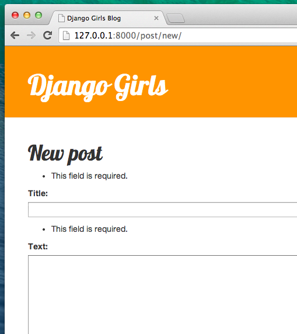
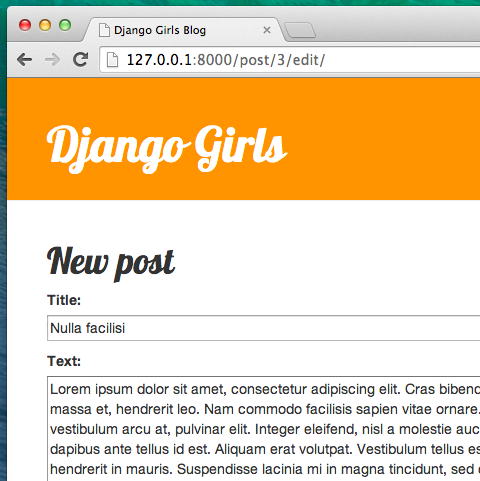

Django Forms
The final thing we want to do on our website is create a nice way to
add and edit blog posts. Django's
admin
is cool, but it is rather hard to customize and make pretty. With
forms
we will have absolute power over our interface – we can do almost
anything we can imagine!
The nice thing about Django forms is that we can either define one
from scratch or create a
ModelForm
which will save the result of the form to the model.
This is exactly what we want to do: we will create a form for our
Post
model.
Like every important part of Django, forms have their own file:
forms.py
.
We need to create a file with this name in the
blog
directory.
blog
└── forms.py
OK, let's open it in the code editor and type the following code:
blog/forms.py
from django import forms
from .models import Post
class PostForm(forms.ModelForm):
class Meta:
model = Post
fields = ('title', 'text')
We need to import Django forms first (
from django import forms
) and our
Post
model (
from .models import Post
).
PostForm
, as you probably suspect, is the name of our form. We need to tell
Django that this form is a
ModelForm
(so Django will do some magic for us) –
forms.ModelForm
is responsible for that.
Next, we have
class Meta
, where we tell Django which model should be used to create this form
(
model = Post
).
Finally, we can say which field(s) should end up in our form. In this
scenario we want only
title
and
text
to be exposed –
author
should be the person who is currently logged in (you!) and
created_date
should be automatically set when we create a post (i.e. in the code),
right?
And that's it! All we need to do now is use the form in a view and display it in a template.
So once again we will create a link to the page, a URL, a view and a template.
Link to a page with the form
Before we add the link, we need some icons to use as buttons for the
link. For this tutorial, download
file-earmark-plus.svg
and save it in the folder
blog/templates/blog/icons/
Note: To download the SVG image, open the context menu on the link (usually by right-clicking on it) and select "Save link as". In the dialog asking you where to save the file, navigate to the
djangogirlsdirectory of your Django project, and within that to subdirectoryblog/templates/blog/icons/, and save the file there.
It's time to open
blog/templates/blog/base.html
in the code editor. Now we can use this icon file inside the base
template as follows. In the
div
element inside
header
section, we will add a link before the
h1
element:
blog/templates/blog/base.html
<a href="{% url 'post_new' %}" class="top-menu">
{% include './icons/file-earmark-plus.svg' %}
</a>
Note that we want to call our new view
post_new
. The
SVG icon
is provided by the
Bootstrap Icons
and it will display a page icon with plus sign. We use a Django
template directive called
include
. This will inject the file's content into the Django template. The
web browser knows how to handle this type of content without any
further processing.
You can download all the Bootstrap icons here . Unzip the file and copy all the SVG image files into a new folder inside
blog/templates/blog/calledicons. That way you can access an icon likepencil-fill.svgusing the file pathblog/templates/blog/icons/pencil-fill.svg
After editing the line, your HTML file should now look like this:
blog/templates/blog/base.html
{% load static %}
<!DOCTYPE html>
<html>
<head>
<title>Django Girls blog</title>
<link rel="stylesheet" href="https://cdn.jsdelivr.net/npm/bootstrap@5.3.3/dist/css/bootstrap.min.css" integrity="sha384-QWTKZyjpPEjISv5WaRU9OFeRpok6YctnYmDr5pNlyT2bRjXh0JMhjY6hW+ALEwIH" crossorigin="anonymous">
<link rel="stylesheet" href="https://fonts.googleapis.com/css?family=Lobster&subset=latin,latin-ext">
<link rel="stylesheet" href="{% static 'css/blog.css' %}">
</head>
<body>
<header class="page-header">
<div class="container">
<a href="{% url 'post_new' %}" class="top-menu">
{% include './icons/file-earmark-plus.svg' %}
</a>
<h1><a href="/">Django Girls Blog</a></h1>
</div>
</header>
<main class="content container">
<div class="row">
<div class="col">
{% block content %}
{% endblock %}
</div>
</div>
</main>
</body>
</html>
After saving and refreshing the page
http://127.0.0.1:8000
you will see a familiar
NoReverseMatch
error. Is that the case? Good!
URL
We open
blog/urls.py
in the code editor and add a line:
blog/urls.py
path('post/new/', views.post_new, name='post_new'),
And the final code will look like this:
blog/urls.py
from django.urls import path
from . import views
urlpatterns = [
path('', views.post_list, name='post_list'),
path('post/<int:pk>/', views.post_detail, name='post_detail'),
path('post/new/', views.post_new, name='post_new'),
]
After refreshing the site, we see an
AttributeError
, since we don't have the
post_new
view implemented. Let's add it right now.
post_new view
Time to open the
blog/views.py
file in the code editor and add the following lines with the rest of
the
from
rows:
blog/views.py
from .forms import PostForm
And then our view :
blog/views.py
def post_new(request):
form = PostForm()
return render(request, 'blog/post_edit.html', {'form': form})
To create a new
Post
form, we need to call
PostForm()
and pass it to the template. We will go back to this
view
, but for now, let's quickly create a template for the form.
Template
We need to create a file
post_edit.html
in the
blog/templates/blog
directory, and open it in the code editor. To make a form work we need
several things:
-
We have to display the form. We can do that with (for example)
{{ form.as_p }}. -
The line above needs to be wrapped with an HTML form element:
<form method="POST">...</form>. -
We need a
Savebutton. We do that with an HTML button:<button type="submit">Save</button>. -
And finally, just after the opening
<form ...>tag we need to add{% csrf_token %}. This is very important, since it makes your forms secure! If you forget about this bit, Django will complain when you try to save the form:

OK, so let's see how the HTML in
post_edit.html
should look:
blog/templates/blog/post_edit.html
{% extends 'blog/base.html' %}
{% block content %}
<h2>New post</h2>
<form method="POST" class="post-form">{% csrf_token %}
{{ form.as_p }}
<button type="submit" class="save btn btn-secondary">Save</button>
</form>
{% endblock %}
Time to refresh! Yay! Your form is displayed!
But, wait a minute! When you type something in the
title
and
text
fields and try to save it, what will happen?
Nothing! We are once again on the same page and our text is gone… and no new post is added. So what went wrong?
The answer is: nothing. We need to do a little bit more work in our view .
Saving the form
Open
blog/views.py
once again in the code editor. Currently all we have in the
post_new
view is the following:
blog/views.py
def post_new(request):
form = PostForm()
return render(request, 'blog/post_edit.html', {'form': form})
When we submit the form, we are brought back to the same view, but
this time the
request
parameter is different. If we look at the
request.method
it will be
"POST"
(method for sending forms) instead of
"GET"
(method for requesting pages) and the
request.POST
attribute will contain all the fields from the form. The naming has
nothing to do with a blog "post"; it's to do with the fact that we're
"posting" data.
So in our
view
we have two separate situations to handle: first, when we access the
page for the first time and we want a blank form, and second, when we
go back to the
view
with all form data we just typed. So we need to add a condition (we
will use
if
for that):
blog/views.py
if request.method == "POST":
[...]
else:
form = PostForm()
It's time to fill in the dots
[...]
. If
method
is
POST
then we want to construct the
PostForm
with data from the form, right? We will do that as follows:
blog/views.py
form = PostForm(request.POST)
The next thing is to check if the form is correct (all required fields
are set and no incorrect values have been submitted). We do that with
form.is_valid()
.
We check if the form is valid and if so, we can save it!
blog/views.py
if form.is_valid():
post = form.save(commit=False)
post.author = request.user
post.published_date = timezone.now()
post.save()
Basically, we have two things here: we save the form with
form.save
and we add an author (since there was no
author
field in the
PostForm
and this field is required).
commit=False
means that we don't want to save the
Post
model yet – we want to add the author first. Most of the time you will
use
form.save()
without
commit=False
, but in this case, we need to supply it.
post.save()
will preserve changes (adding the author) and a new blog post is
created!
Finally, it would be awesome if we could immediately go to the
post_detail
page for our newly created blog post, right? To do that we need one
more import:
blog/views.py
from django.shortcuts import redirect
Add it at the very beginning of your file. And now we can say, "go to
the
post_detail
page for the newly created post":
blog/views.py
return redirect('post_detail', pk=post.pk)
post_detail
is the name of the view we want to go to. Remember that this
view
requires a
pk
variable? To pass it to the views, we use
pk=post.pk
, where
post
is the newly created blog post!
OK, we've talked a lot, but we probably want to see what the whole view looks like now, right?
blog/views.py
def post_new(request):
if request.method == "POST":
form = PostForm(request.POST)
if form.is_valid():
post = form.save(commit=False)
post.author = request.user
post.published_date = timezone.now()
post.save()
return redirect('post_detail', pk=post.pk)
else:
form = PostForm()
return render(request, 'blog/post_edit.html', {'form': form})
Let's see if it works. Go to the page
http://127.0.0.1:8000/post/new/
, add a
title
and
text
, save it… and voilà! The new blog post is added and we are redirected
to the
post_detail
page!
You might have noticed that we are setting the publish date before saving the post. Later on, we will introduce a publish button in Django Girls Tutorial: Extensions .
That is awesome!
As we have recently used the Django admin interface, the system currently thinks we are still logged in. There are a few situations that could lead to us being logged out (closing the browser, restarting the DB, etc.). If, when creating a post, you find that you are getting errors referring to the lack of a logged-in user, head to the admin page http://127.0.0.1:8000/admin and log in again. This will fix the issue temporarily. There is a permanent fix awaiting you in the Homework: add security to your website! chapter after the main tutorial.

Form validation
Now, we will show you how cool Django forms are. A blog post needs to
have
title
and
text
fields. In our
Post
model we did not say that these fields (as opposed to
published_date
) are not required, so Django, by default, expects them to be set.
Try to save the form without
title
and
text
. Guess what will happen!

Django is taking care to validate that all the fields in our form are correct. Isn't it awesome?
Edit form
Now we know how to add a new post. But what if we want to edit an existing one? This is very similar to what we just did. Let's create some important things quickly. (If you don't understand something, you should ask your coach or look at the previous chapters, since we covered all these steps already.)
First, let's save the icon which represents the edit button. Download
pencil-fill.svg
and save it to the location
blog/templates/blog/icons/
.
Open
blog/templates/blog/post_detail.html
in the code editor and add the following code inside
article
element:
blog/templates/blog/post_detail.html
<aside class="actions">
<a class="btn btn-secondary" href="{% url 'post_edit' pk=post.pk %}">
{% include './icons/pencil-fill.svg' %}
</a>
</aside>
so that the template will look like this:
blog/templates/blog/post_detail.html
{% extends 'blog/base.html' %}
{% block content %}
<article class="post">
<aside class="actions">
<a class="btn btn-secondary" href="{% url 'post_edit' pk=post.pk %}">
{% include './icons/pencil-fill.svg' %}
</a>
</aside>
{% if post.published_date %}
<time class="date">
{{ post.published_date }}
</time>
{% endif %}
<h2>{{ post.title }}</h2>
<p>{{ post.text|linebreaksbr }}</p>
</article>
{% endblock %}
Open
blog/urls.py
in the code editor, and add this line:
blog/urls.py
path('post/<int:pk>/edit/', views.post_edit, name='post_edit'),
We will reuse the template
blog/templates/blog/post_edit.html
, so the last missing thing is a
view
.
Let's open
blog/views.py
in the code editor and add this at the very end of the file:
blog/views.py
def post_edit(request, pk):
post = get_object_or_404(Post, pk=pk)
if request.method == "POST":
form = PostForm(request.POST, instance=post)
if form.is_valid():
post = form.save(commit=False)
post.author = request.user
post.published_date = timezone.now()
post.save()
return redirect('post_detail', pk=post.pk)
else:
form = PostForm(instance=post)
return render(request, 'blog/post_edit.html', {'form': form})
This looks almost exactly the same as our
post_new
view, right? But not entirely. For one, we pass an extra
pk
parameter from
urls
. Next, we get the
Post
model we want to edit with
get_object_or_404(Post, pk=pk)
and then, when we create a form, we pass this post as an
instance
, both when we save the form…
blog/views.py
form = PostForm(request.POST, instance=post)
…and when we've just opened a form with this post to edit:
blog/views.py
form = PostForm(instance=post)
OK, let's test if it works! Let's go to the
post_detail
page. There should be an edit button in the top-right corner:

When you click it you will see the form with our blog post:

Feel free to change the title or the text and save the changes!
Congratulations! Your application is getting more and more complete!
If you need more information about Django forms, you should read the documentation: https://docs.djangoproject.com/en/5.1/topics/forms/
Security
Being able to create new posts by clicking a link is awesome! But right now, anyone who visits your site will be able to make a new blog post, and that's probably not something you want. Let's make it so the button shows up for you but not for anyone else.
Open
blog/templates/blog/base.html
in the code editor, find our
div
inside
header
and the anchor element you put in there earlier. It should look like
this:
blog/templates/blog/base.html
<a href="{% url 'post_new' %}" class="top-menu">
{% include './icons/file-earmark-plus.svg' %}
</a>
We're going to add another
{% if %}
tag to this, which will make the link show up only for users who are
logged into the admin. Right now, that's just you! Change the
<a>
element to look like this:
blog/templates/blog/base.html
{% if user.is_authenticated %}
<a href="{% url 'post_new' %}" class="top-menu">
{% include './icons/file-earmark-plus.svg' %}
</a>
{% endif %}
This
{% if %}
will cause the link to be sent to the browser only if the user
requesting the page is logged in. This doesn't protect the creation of
new posts completely, but it's a good first step. We'll cover more
security in the extension lessons.
Remember the edit icon we just added to our detail page? We also want to add the same change there, so other people won't be able to edit existing posts.
Open
blog/templates/blog/post_detail.html
in the code editor and find this line:
blog/templates/blog/post_detail.html
<a class="btn btn-secondary" href="{% url 'post_edit' pk=post.pk %}">
{% include './icons/pencil-fill.svg' %}
</a>
Change it to this:
blog/templates/blog/post_detail.html
{% if user.is_authenticated %}
<a class="btn btn-secondary" href="{% url 'post_edit' pk=post.pk %}">
{% include './icons/pencil-fill.svg' %}
</a>
{% endif %}
Since you're likely logged in, if you refresh the page, you won't see anything different. Load the page in a different browser or an incognito window (called "InPrivate" in Windows Edge), though, and you'll see that the link doesn't show up, and the icon doesn't display either!
One more thing: deploy time!
Let's see if all this works on PythonAnywhere. Time for another deploy!
- First, commit your new code, and push it up to GitHub:
command-line
$ git status
$ git add .
$ git status
$ git commit -m "Added views to create/edit blog post inside the site."
$ git push
- Then, in a PythonAnywhere Bash console :
PythonAnywhere command-line
$ cd ~/<your-pythonanywhere-domain>.pythonanywhere.com
$ git pull
[...]
(Remember to substitute
<your-pythonanywhere-domain>
with your actual PythonAnywhere subdomain, without the
angle-brackets.)
- Finally, hop on over to the "Web" page (use the menu button in the upper right of the console) and hit Reload . Refresh your https://subdomain.pythonanywhere.com blog to see the changes.
And that should be it. Congrats! :)